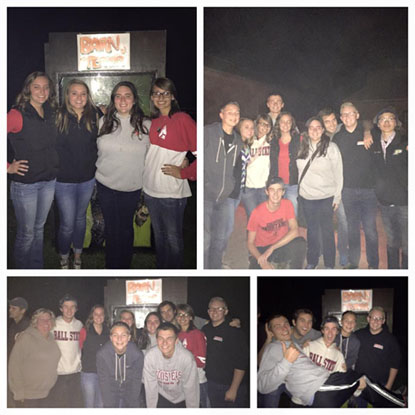

Tennis
My main interest and priorities has been revolving around tennis for the past ten years. Ever since I was in junor high, I picked up an interest for tennis. I have never loved a sport or hobby more than I do tennis. Tennis has become such a strong passion of mine to where I sleep, eat, and breathe it. It is the only sport I play, watch, and follow. I have learned a lot from it over the years and picked up some traits that I can use in my personal life. My life would definitely be different without tennis.
Video Games
Ever since I was a kid, I enjoyed video games. My siblings and cousins would always play them so it didn;t take much for me to get dran in. I have always been a Nintendo fan. My very first console was a Nintendo 64. My siblings and I would play it everyday and have a blast. Mario games have always been my favorite series. To this day, I am still a huge Nintendo fan and I have owned every consoole that has been released after the Nintendo 64 including portable devices.
Friends
Another one of my favorite hobbies that is necessary to me is hanging out with my fiance and friends. Without them, I would be insane. Everybody needs some love and support in their lives and that's exactly what I get with my friends. We always have a great time when we are together. We always enjoy grabbing a bite to eat at our favorite restaurants. Some of our favorite hobbies include bowling and laser tag. I met all of my close friends from high school and we are still pretty close to this day.
